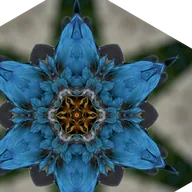

만화경

한 점을 중심으로 조각들을 거울처럼 반사합니다.
만화경은 그림의 한 조각을 점 주변의 원형으로 반복합니다. 분할 수는 조각의 개수, 각도는 패턴을 돌리는 정도, 중심는 중심입니다. 각도를 애니메이션하면 돌아가는 패턴이 됩니다.
설정
| 설정 | 유형 | 범위 | 기본값 |
|---|---|---|---|
| 중심 | 점 (X, Y) | -1~2 | 0.5, 0.5 |
| 분할 수 | 숫자 | 1~64 | 6 |
| 각도 | 각도 | -360°~360° | 0° |
| 거울 | 켜짐 또는 꺼짐 | – | 켜짐 |

한 점을 중심으로 조각들을 거울처럼 반사합니다.
만화경은 그림의 한 조각을 점 주변의 원형으로 반복합니다. 분할 수는 조각의 개수, 각도는 패턴을 돌리는 정도, 중심는 중심입니다. 각도를 애니메이션하면 돌아가는 패턴이 됩니다.
| 설정 | 유형 | 범위 | 기본값 |
|---|---|---|---|
| 중심 | 점 (X, Y) | -1~2 | 0.5, 0.5 |
| 분할 수 | 숫자 | 1~64 | 6 |
| 각도 | 각도 | -360°~360° | 0° |
| 거울 | 켜짐 또는 꺼짐 | – | 켜짐 |